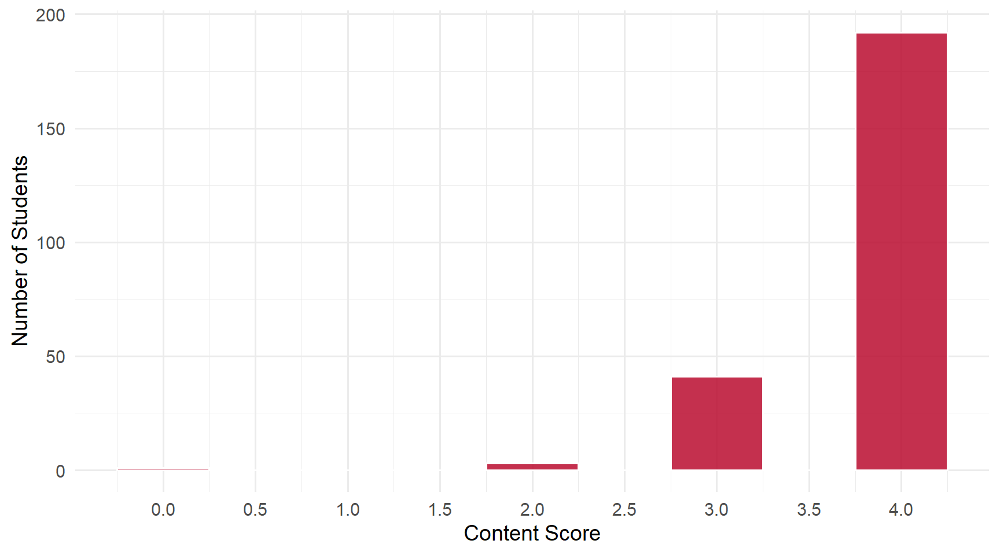
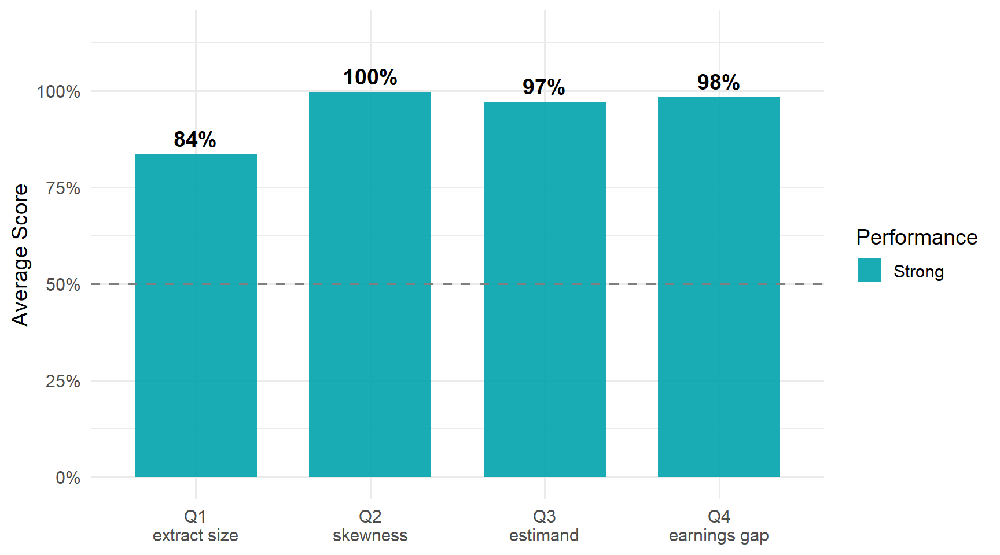

4 Daily 03 — Aug 27
4.1 Class Performance
Students: 237 | Content mean: 3.78 / 4 | Median: 4 | SD: 0.50 | Mean daily score: 9.89 / 10
Content scores ranged from 0 to 4 out of 4. (Your daily score adds the 8-point attendance credit for submitting; each question is worth 0.5 of the remaining 2 points.)
This was the strongest daily of the term so far, and three of the four questions were answered almost universally. That makes the fourth one — the size of your project extract — the whole story of this daily.
NoteWhy the scores come in big steps
Three of this daily’s four questions were graded all-or-nothing: the recalled value is either right or it isn’t, so there was no half-credit tier to land on. That is why nearly every score on this daily is 10, 9.5, or 9.0, with nothing in between.
4.2 Score Distribution
4.3 Performance by Question

4.4 Questions
4.4.1 Q1: How many observations will your project extract file have?
TipCorrect Answer
49,872.
WarningCommon Errors
- Rounding to 49,000. This was the dominant error by a wide margin, and it accounts for most of the credit lost on the entire daily. “49,000,” “~49,000,” “49K,” “about 49 thousand” — these all show you retained the right magnitude, which is genuinely most of the way there. But a count of rows is an exact integer, not an estimate. There is no rounding involved in counting: the file either has 49,872 rows or it does not.
- Giving the full survey size instead of the extract size — around 142,000. This is the one conceptual error on the question rather than a memory one, and it is the more important of the two to fix. The raw source file is one thing; your extract is what survives the filters applied to it. Those are different numbers describing different objects, and the project works with the second.
- Single-digit slips inside an otherwise-correct recall — “48,872,” “49,472,” “49,672,” “49,870.” The number was learned; one digit moved.
Writing the approximation and the exact value — “about 49,000, or 49,872 exactly” — earned full credit. The exact figure is present and labeled as the answer.
ImportantWorth Your Attention
Q1 was the only question on this daily that cost the class real points: 84%, against 97% or better on the other three.
The reason is worth naming, because it will come back. Almost everyone who missed it knew the number — they wrote 49,000 when the answer was 49,872. That is not a memory failure, it is a habit of treating a count as an approximate quantity. Counts are not approximate. When you are asked how many rows a file has, the answer is a specific integer, and “about forty-nine thousand” is a different kind of claim.
You will be reporting this number in your project. Learn it as 49,872.
4.4.2 Q2: The earnings distribution depicted in Figure 1 is ___ to the right.
TipCorrect Answer
Skewed — the distribution has a long right tail, so it is skewed (or stretched) to the right.
WarningCommon Errors
There were essentially none. This was the strongest item of the term so far — one page in 237 missed it, and that page was blank rather than wrong.
Spelling varied enormously (“skeved,” “shewed,” “skewd,” “skewe-”), and the final letters were the ones most often mangled. None of it cost anyone anything: the word was unmistakable, and no other word fits the blank. Several students wrote the full phrase, “skewed to the right” — correct, and the repetition is harmless.
4.4.3 Q3: An estimator is unbiased if its expected value equals the ___.
TipCorrect Answer
The estimand — the population quantity you are trying to learn about. (The “population value” is the same idea in different words.)
WarningCommon Errors
“Estimate” or “estimated value” instead of “estimand.” This was the only real error on the question, and it is a substantive one rather than a slip. It is also circular: saying an estimator is unbiased when its expected value equals the estimate defines the term using itself, and “estimated value” points at the number your sample produced rather than the truth you are chasing.
The three words are easy to keep straight once separated:
- the estimand is the thing you want to know — a fixed feature of the population;
- the estimator is the rule you apply to a sample;
- the estimate is the number that rule returns on one particular sample.
Unbiasedness is a statement connecting the first and the second: across all possible samples, the estimator’s expected value lands on the estimand.
Misspellings of the right word — a dropped or doubled interior letter — were read as correct. The distinction that mattered was between a misspelled estimand and a different word.
A few students wrote “estimate,” struck it out, and wrote “estimand.” That is the distinction being learned in real time.
4.4.4 Q4: On average, men earned about $___ more than women in 2009.
TipCorrect Answer
About $19,000 — the figure rounds from roughly $18,924.
WarningCommon Errors
- Dropping the scale — writing a bare “19” or “$19” with no thousands, no comma, and no “K.” This was the only error on the question that cost points more than once. Nineteen dollars and nineteen thousand dollars are different claims about the labor market, and the blank asked for the amount.
- Shorthand that kept the scale — “19K,” “$19K,” “19 thousand” — was correct. The K does the work the comma would have.
Writing the unrounded figure alongside the rounded one — “18,924 (19,000)” — was also correct: the question asked for the rounded value, and these answers supplied it with the arithmetic attached. Notably, nobody gave 18,000 on its own, so the half-credit tier on this question was never used.
4.5 What the Class Did Well
Three of four questions landed above 97%. Q2 was effectively universal, Q4 close behind, and Q3’s only recurring miss was a single confusable word.
The vocabulary is sticking. Skewed and estimand are both terms introduced recently, and both came back nearly intact — including through some adventurous spelling, which cost nothing because the intended word was never in doubt.
Where answers were wrong, they were rarely uninformed. The most common error on the daily — 49,000 for 49,872 — is what a student who did the reading writes. That is a different and much better problem than not knowing.
4.6 What to Review
- Your extract has 49,872 observations. Exactly that. You will report this number in the project, and a count is never an estimate.
- The extract is not the source file. Roughly 142,000 rows go in; 49,872 come out the other side of the filters. Knowing which number describes which object is the actual point of the question.
- Estimand, estimator, estimate — three different things. The estimand is the population truth, the estimator is the rule, the estimate is the number you got. Unbiased means the estimator’s expected value equals the estimand.
- Carry the units. “$19” and “$19,000” are not the same answer, and the scale is part of the number.
NoteHow this was graded
Every paper was scored twice, independently, against the same published rubric, by graders who could not see each other’s scores or your name. The two passes agreed on more than 99% of all scores; the handful of disagreements were reviewed a third time against the rubric and settled with a written reason. Submitting the daily earns 8 of 10 regardless of content.